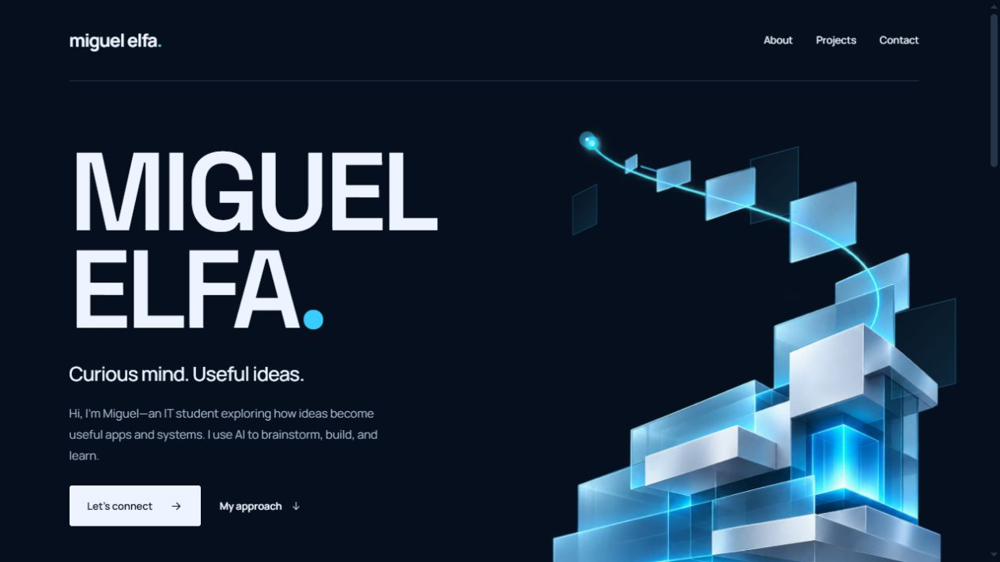

Choosing
Space Grotesk.
TypographyI compared heading styles and chose Space Grotesk. The change gave my name and ideas a clearer voice than the earlier italic headings.
Useful ideas.Useful ideas.
I’m Miguel Elfa, an IT student who likes taking a rough idea and finding a way to make it work.
I use AI to explore and build. I’m learning the code along the way.
See what I’m working on
A cinematic opening. But the artwork said more about technology than it did about me.
Useful ideas.
Useful
ideas.
I wanted the headings to feel more deliberate. Comparing typefaces helped me choose Space Grotesk.
Less spectacle.
More substance.
This revision brings the work forward. The story is in the decisions, including the ones I changed.
A personal portfolio, built with AI assistance.
From a conversation to a website I can share.
How do I introduce myself
when I’m still getting started?
That was the starting point. I wanted a place for future projects, and something I could share with employers and clients today.
The first version leaned into cinematic visuals. After living with it, I wanted visitors to see more of my thinking. So I made the portfolio itself the first project.
Explore the source on GitHubI compared heading styles and chose Space Grotesk. The change gave my name and ideas a clearer voice than the earlier italic headings.
I asked for more animation, then noticed that movement alone wasn’t making the page more personal. This version lets you explore the actual changes instead.
“For me it’s still lacking on hovering animation and scrolling animation.”My feedback on an earlier version
I created a GitHub repository, uploaded the portfolio, and connected it to Vercel with guidance. Getting it live was part of the project, too.
My partI set the brief, chose the visual direction and typography, gave feedback on the layout and movement, and published the site with guidance.
AI’s partAI helped brainstorm, generate the earlier artwork, write and revise the HTML, CSS, and JavaScript, and work through checks and deployment steps.
I’m still learning how the implementation works. This is a record of that process, not a claim that I wrote every line myself.
More apps and systems will live here as I build them. For now, this portfolio is the starting point.
I’m Miguel Alfonso T. Elfa.
An IT student with ideas I want to put to use.
I’m drawn to the point where a rough idea becomes something you can click, test, and improve. AI is part of how I explore that, from asking questions to working through a build.
I want each project to deepen my understanding of the code behind it. This portfolio is the first step.
An idea, an opportunity, or something I could learn from.
I’d like to hear it.